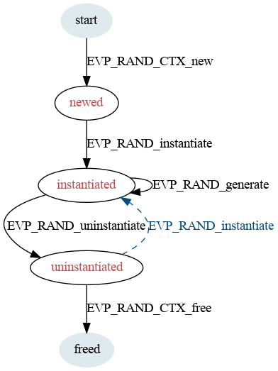

life_cycle-rand - The RAND algorithm life-cycle
All random number generator (RANDs) go through a number of stages in their life-cycle:
This state represents the RAND before it has been allocated. It is the starting state for any life-cycle transitions.
This state represents the RAND after it has been allocated but unable to generate any output.
This state represents the RAND when it is set up and capable of generating output.
This state represents the RAND when it has been shutdown and it is no longer capable of generating output.
This state is entered when the RAND is freed. It is the terminal state for all life-cycle transitions.
The usual life-cycle of a RAND is illustrated:
This section defines all of the legal state transitions. This is the canonical list.
| Function Call | Current State | ||||
|---|---|---|---|---|---|
| start | newed | instantiated | uninstantiated | freed | |
| EVP_RAND_CTX_new | newed | ||||
| EVP_RAND_instantiate | instantiated | ||||
| EVP_RAND_generate | instantiated | ||||
| EVP_RAND_uninstantiate | uninstantiated | ||||
| EVP_RAND_CTX_free | freed | freed | freed | freed | |
| EVP_RAND_CTX_get_params | newed | instantiated | uninstantiated | ||
| EVP_RAND_CTX_set_params | newed | instantiated | uninstantiated | ||
| EVP_RAND_CTX_gettable_params | newed | instantiated | uninstantiated | ||
| EVP_RAND_CTX_settable_params | newed | instantiated | uninstantiated | ||
At some point the EVP layer will begin enforcing the transitions described herein.
provider-rand(7), EVP_RAND(3).
The provider RAND interface was introduced in OpenSSL 3.0.
Copyright 2021 The OpenSSL Project Authors. All Rights Reserved.
Licensed under the Apache License 2.0 (the "License"). You may not use this file except in compliance with the License. You can obtain a copy in the file LICENSE in the source distribution or at https://www.openssl.org/source/license.html.